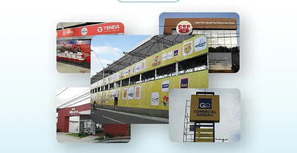
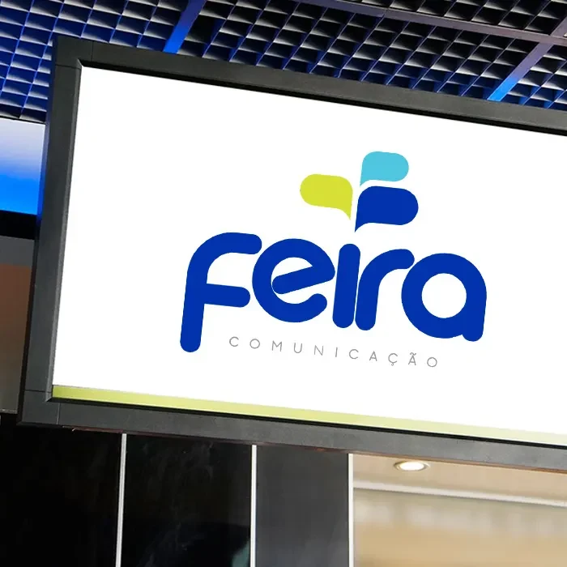
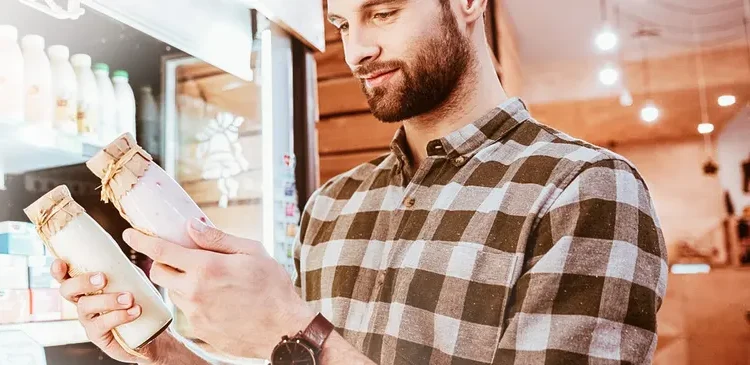

Feira de Santana · Bahia
A Feira Comunicação atua no segmento de comunicação visual, etiquetas e rótulos em conformidade com as melhores práticas, buscando inovar e solucionar as necessidades dos clientes.
Conheça nossos serviços de comunicação visual.
Fachadas, totens, letreiros e peças de grande formato — parte do que já saiu da Feira Comunicação para clientes em Feira de Santana.


Produzimos nossos materiais com equipamentos de última geração, buscando a redução do impacto ambiental e a preservação da saúde dos colaboradores.
Ainda mais destaque para o seu produto — rótulos de alta qualidade.
Etiquetas e rótulos em conformidade com as melhores práticas, pensados para reforçar a marca do cliente no ponto de venda.

Missão e visão
Oferecer aos clientes soluções inteligentes em comunicação visual, etiquetas e rótulos.
Ser referência em etiquetas e rótulos no Nordeste e ampliar a segmentação de clientes.
Contato
Retornaremos o mais rápido possível.